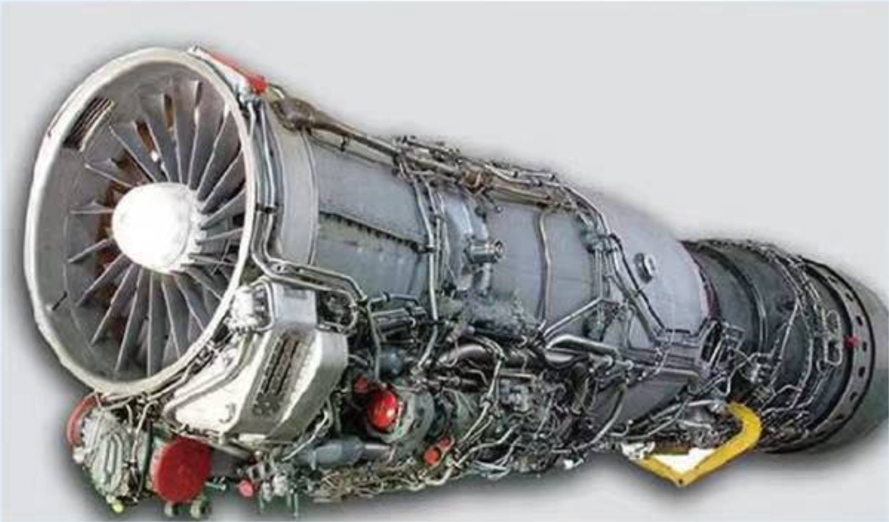
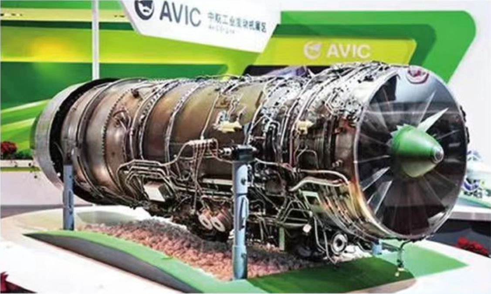
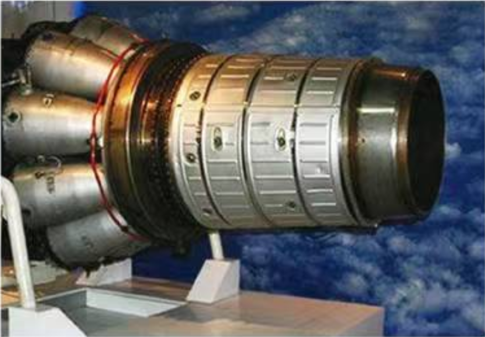
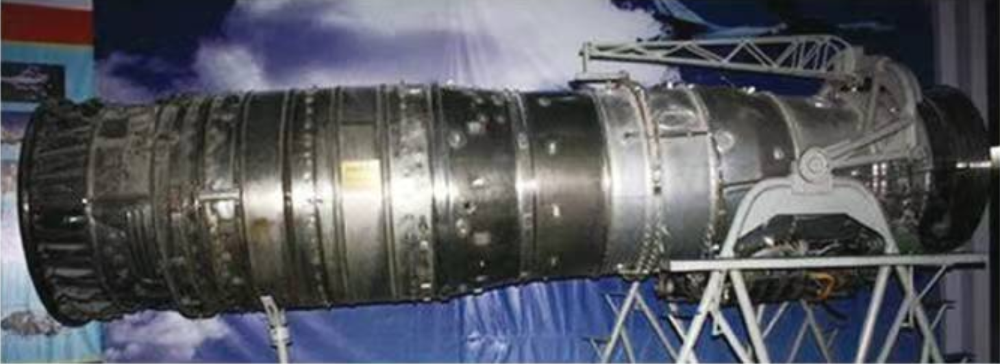
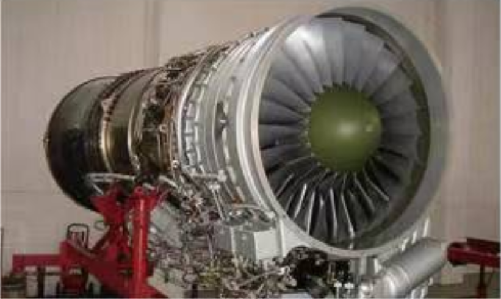

航空发动机被誉为“工业之花”，是一个国家科技、工业和国防实力的重要标志。中国航空发动机工业在一片空白的基础上发展起来，从最初的仿制函改进到可以独立设计制造高性能航空发动机，走过了一条布满荆棘的发展道路。
- 1909年9月21日，第一架由中国自主研制并驾驶的飞机“冯如1号”试飞成功。
- 1910年8月，中国第一个机场在南苑修建。
- 1913年9月，中国第一所航空学校一北京南苑航空学校成立。
- 1920年4月24日，中国第一条民用航线—京沪航线京津段试飞成功。
- 1920年5月1日，中国最旱的民间航空团体一中华航空协会在北京成立。
- 1927年1月1日，丁纪徐成为中国历史上第一个空中跳伞者。
- 1928年10月10日，中国第一所民办航空学校——厦门民用航空学校成立。
- 1929年6月6日，中国首次举办航空展览。
- 1936年4月24日，中国第一座自行设计制造的风洞首次开车运转试验。
- 1950年6月19日，人民空军第一支航空兵部队成立。
- 1951年4月17日，重工业部航空工业局在沈阳成立。
- 1954年7月25日，南昌飞机厂试制雅克-18(初教5)型教练机成功。
- 1956年9月8日，中国第一种喷气式歼击机米格-17型(歼5)试制成功。
- 1958年7月，中国自行设计制造的歼教1型喷气式教练机首飞成功。
- 1959年9月30日，米格-19(歼6)歼击机首飞成功。
- 1964年2月20日，中国航空学会在北京召开成立。
- 1964年4月11日，“雷雳”1型空空导弹定型并投入批量生产。
- 1964年9月，轰5型飞机在哈尔滨飞机厂试制成功。
- 1966年1月17日，歼7型飞机首次试飞成功。
- 1979年12月，新中国自行研制的歼8型高空高速歼击机设计定型。
- 1980年4月8日，“霹雳”3型空空导弹设计定型并投入批量生产。
- 1992年1月16日，直9型直升机首飞成功。
- 1995年4月，中国第一架超声速无人驾驶飞机首飞成功。
- 1998年3月，歼10型飞机首飞成功。
- 1999年12月，歼11A型飞机首飞成功。
- 2011年1月11日，中国第四代隐形战机歼20首飞成功。
- 2017年5月5日，我国首款具有自主知识产权的干线民用飞机C919首飞成功。
- ……
20世纪60年代初中国就展开了涡扇发动机的研制工作，但初期的几种型号均未完成研制全过程。在40年的苦苦等待之后，中国空军终于在21世纪初装备了自主研发制造的国产高性能涡扇发动机。
涡扇6发动机是我国自行研制的第一种推重比为6—级的军用加力涡扇发动机。它是针对高空高速歼击机的技术要求而设计的。“文革”期间涡扇6研制进度受到一定影响，八十年代初期才达到设计指标。后因空军飞机研制计划的改变，涡扇一6失去使用对象，于1984年停止研制，总计生产12台。
1975年12月13日，中、英双方签订“斯贝”MK202型发动机的引进合同，中国可以按许可证在国内生产组装该型发动机，即涡扇9发动机。2003年7月17日，国产化涡扇-9终于通过国产化工程技术鉴定，获准投入批量生产，被命名为“秦岭”。
涡扇10系列发动机，是我国第一台自行研制的具有自主知识产权的大推力加力式涡轮风扇发动机，命名为“太行”。从20世纪80年代后期开始验证机研制，2006年3月24日正式设计定型。
自1956年第一台涡喷5发动机在沈阳航空发动机厂仿制成功以来，中国航空发动机工业一直以仿制和改进为主，虽然也曾自行研制过几种发动机，但都因种种原因半途而废。2002年定型的“昆仑”发动机是中国第一个走完自行研制全过程的航空发动机，也使中国一跃成为继美、俄、英、法后第五大航空发动机生产国。
涡喷5是一种离心式单转子带加力式航空发动机，属于第一代喷气发动机。1956年6月，投入批量生产，1985年停产，主要用于米格-15系列和国产歼5系列战斗机。涡喷5发动机的研制成功，标志着中国航空发动机工业已从制造活塞式发动机时代发展到了喷气式发动机的时代，成为了当时世界上为数不多的几个可以批量生产喷气式发动机的国家之一。
涡喷8于1959年7月定型，是中国首型超音速航空发动机，属于轴流式单转子带加力燃烧室的涡轮喷气发动机。涡喷6系列发动机是产量最大国产航空发动机，总产量高达29316台，主要用于歼6系列和强5系列国产战机，目前仍有相当数量在役。
涡喷14于2002年5月定型，是国内目前最先进的中等推力级的军用涡喷发动机，主要用于歼-8H/F/G系列战机。涡喷14发动机在性能和寿命方面仍有发展潜力，其发展型可满足中国空军对中等偏大推力级涡喷发动机的需求。
